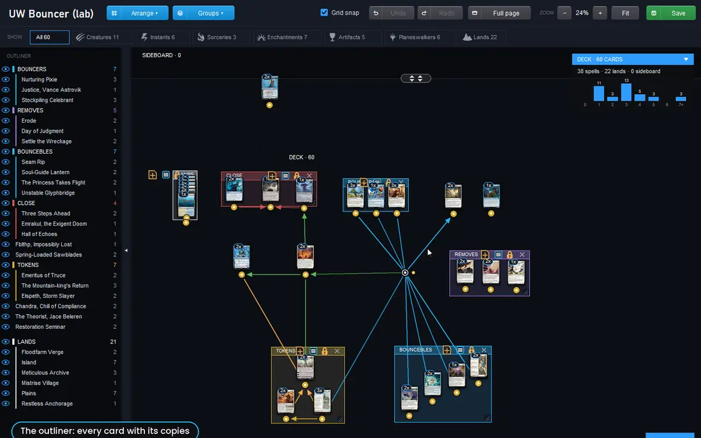

Guide · Board
Board
The Board shows a deck as real cards on an endless sheet. Stack them as you like, draw arrows between the cards that work together, give each link a colour and a weight, and frame groups of cards under a name. It is a place to think about a deck, and to show someone how it works.

View and edit
- View: the Board button under the list in any deck window. You can zoom, pan, open piles, see a card large and move cards around to look at them, but nothing you do is saved and the deck does not change.
- Edit: open the deck with Edit, then Board under the builder's list. Every tool below is there, the layout is saved for that deck, and changes to cards and copies go straight to the deck.
A meta deck or an Arena deck is only viewed; press Edit on it and its copy in the Deck builder group can be laid out freely.
The sheet
| Control | What it does |
|---|---|
| Wheel | Zoom from 30% to 200%, around the pointer. Shift+Wheel scrolls sideways. |
| Middle-drag | Pan. The sheet has no edges. |
| A | Frames the whole board. |
| F | Frames the selection, or the card picked in the outliner. |
| − % + Fit | Zoom from the header; Fit puts the whole deck in the window. |
| ⤢ Full page | The Board on the whole screen, and back. |
| Sideboard band | The narrow band on top holds the sideboard (and the commander or companion). Drag the bar with ▲▼ to make it taller or shorter. |
Cards and piles
Each card name appears once, with a small pill on its left edge saying how many copies are in the deck, readable even inside a pile. At first the cards are piled by mana value, lands at the end.
| Action | How |
|---|---|
| Move a card | Drag it from anywhere on the card. Dropped on another pile (it lights up blue) it joins the pile; dropped in an empty spot it starts a new pile. |
| Move a whole pile | Shift+drag. |
| Open a pile | Click a card in the middle: the pile spreads out and shows it whole. Click again to close. |
| Change copies | The − N + counter under each whole card, up to the format's limit. At 0 the card leaves the deck. |
| Deck ↔ sideboard | Drag a card between the band and the sheet, or double-click it to move one copy across. |
| Swap a card | The ⇄ next to the gold dot: type a name and pick the new card. It takes the same place and copies, and keeps the old card's arrows. |
| Add a card | Add card in the header: type a name, Enter puts it in the deck, Shift+Enter in the sideboard. In the builder you can also drag cards in from the Collection. |
| See a card large | Hover it. |
A card added without a place (from the search or a double-click in the Collection) goes to a free column at the right of everything, so it never lands on top of your layout.
Synergy arrows
Each whole card has a gold dot under it. Drag from the dot of one card to another card: an arrow goes from the first, the parent, to the second, the child. Read it as “this card makes that one better”. The help line names the families the two cards share, read from their rules text (what the parent produces and the child wants).
| Action | How |
|---|---|
| Link two cards | Drag from the parent's gold dot to the child. |
| Remove a link | Hover the line: a small bar appears at its middle. Its ✕ removes the link; right-clicking the line does the same. Drawing the same link again also removes it. |
| Colour and weight | Click a line on empty sheet, or the colour circle in its bar: eight colours and a slider for the thickness. |
| Break a line with a dot | Double-click the line, or the pin in its bar. Drag the dot to bend the line. |
| Branch from a dot | A dot has its own gold handle: drag it to another card for a new link from the same parent. Drop a line from another card on a dot and it becomes one more input: everything leaving the dot then comes from both. |
| Remove a dot | Right-click it; the lines become straight again. |
Lines run behind the cards, so the layout stays readable. The links you make teach the app: when you drag from a card, the cards it was linked to in your other decks, if they are in this one, get a dashed outline as a suggestion.
Selections and labels
- Select: drag a box on the empty sheet. Shift adds to the selection, Ctrl+click adds or removes a single pile, a click on empty sheet or Esc clears it.
- Move a selection: press anywhere inside its dashed frame and drag. The whole selection moves together, arrows included.
- Label it: the ≡ icon at the top right of the selection opens a small menu: a name and a colour, then Create. A labelled frame appears around the cards.
- Locked or open: a locked label (the default) carries its cards, dots and inner labels when you drag its title. Open the lock and the label moves alone; dropped over other cards, it takes them in.
- The ≡ on the label's title renames it, changes its colour, locks it or deletes it (the cards stay).
Tools to find your way

| Tool | What it does |
|---|---|
| Outliner | On the left: every card with its copies, spells first, then lands, then the sideboard. Click a name, then F to fly to it; double-click does both. The tab on its edge folds it away. |
| HUD | Top right, over the sheet: cards, spells, lands, sideboard and the mana curve. Its blue head folds it. |
| Grid snap | On: whatever you drop lines up on a regular grid, and never on top of another pile. Off: it stays exactly where you leave it. |
| Arrange network | Lays out the linked cards as a tree, parents above children, with as few crossings as it can; the other cards go below by mana value. There is no undo, so arrange before you build labels. |
| Commands | The small panel at the bottom right lists every shortcut, and its top line says what just happened. It starts folded. |
The Board draws on your graphics card when it can, so dragging and zooming stay smooth even with every card and arrow on screen. Layout, links, dots and labels are saved for each deck and come back when you reopen it; cards added later go to the free column, cards removed disappear.